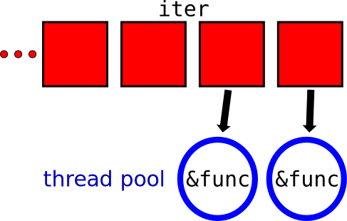
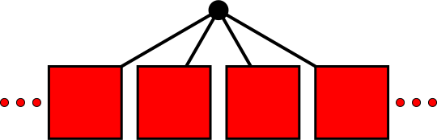

Huon Wilson
huonw.github.io/simple_parallel-jan16
forextern crate image; use std::path::Path; fn resize_image(path: &Path) -> image::ImageResult<()> { // load the file as an image let img = try!(image::open(path)); // resize it let smaller = img.resize(400, 400, image::Lanczos3); // and save it with the same name in /tmp let output = Path::new("/tmp/").join(path.file_name().unwrap()); let mut f = try!(File::create(output)); smaller.save(&mut f, image::JPEG) } fn main() { // command line arguments let files = env::args().skip(1); for s in files { match resize_image(s.as_ref()) { Ok(_) => {} Err(e) => println!("{}: error {:?}", s, e) } } }
forlet files = env::args().skip(1); for s in files { match resize_image(s.as_ref()) { Ok(_) => {} Err(e) => println!("{}: error {:?}", s, e) } }
extern crate scoped_threadpool; let files = env::args().skip(1); // set up the threads let mut pool = scoped_threadpool::Pool::new(4); pool.scoped(|scope| { // run over the images for s in files { // spawning a job for each one scope.execute(move || { match resize_image(s.as_ref()) { Ok(_) => {} Err(e) => println!("{}: error {:?}", s, e) } }) } });
extern crate simple_parallel; let files = env::args().skip(1); simple_parallel::for_(files, |s| { match resize_image(s.as_ref()) { Ok(_) => {} Err(e) => println!("{}: error {:?}", s, e) } })
pub fn for_<I, F>(iter: I, func: F) where I: IntoIterator, // yields... I::Item: Send, // which are passed to... F: Fn(I::Item) + Sync

pub fn for_<I, F>(iter: I, func: F) where I: IntoIterator, // yields... I::Item: Send, // which are passed to... F: Fn(I::Item) + Sync

pub fn for_<I, F>(iter: I, func: F) where I: IntoIterator, // yields... I::Item: Send, // which are passed to... F: Fn(I::Item) + Sync

Safe:
let mut data = [0, 1, 2, 3, 4, 5, 6, 7, 8, 9]; let outside = 1; simple_parallel::for_(&mut data, |elem| *elem += outside);
Unsafe:
let mut data = [0, 1, 2, 3, 4, 5, 6, 7, 8, 9]; let mut outside = 1; simple_parallel::for_(&mut data, |elem| outside += *elem);
error: cannot assign to data in a captured outer variable in an `Fn` closure
simple_parallel::for_(&mut data, |elem| outside += *elem);
^~~~~~~~~~~~~~~~

for ... in |
40 seconds |
simple_parallel::for_ |
10 seconds |
| 4× faster. |
forlet number_of_errors = files .map(|s| resize_image(s.as_ref())) .filter(|e| e.is_err()) .count(); println!("{} errors occurred", number_of_errors);
simple_parallel does too!let number_of_errors = crossbeam::scope(|scope| { simple_parallel::map(scope, files, |s| resize_image(s.as_ref())) .filter(|e| e.is_err()) .count() }); println!("{} errors occurred", number_of_errors);
(std::thread::scoped-pocalyse: #24292)
Some jobs finish faster than others: unordered_map.
let number_of_errors = crossbeam::scope(|scope| { simple_parallel::unordered_map(scope, files, |s| resize_image(s.as_ref())) .filter(|e| e.1.is_err()) .count() }); println!("{} errors occurred", number_of_errors);
The internals, especially around panics (need std::panic::recover)
Iterator is the only bound, so only action available is next and
sending elements over channels. Can be done more efficiently for some
types (e.g. &[T], &mut [T]).
Inflexible: not designed for trees, divide-and-conquer (unlike rayon).

Great for "flat", embarrassingly parallel work.

Simple, just:
s/for/simple_parallel::for_/s/map/simple_parallel::map/(almost)
More info: huonw.github.io/simple_parallel-jan16